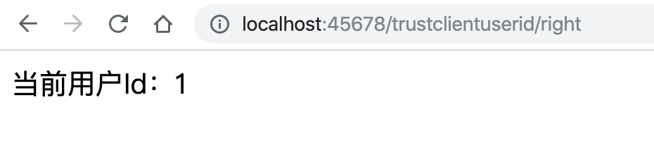

- 00 开篇词 业务代码真的会有这么多坑？.md.html
- 01 使用了并发工具类库，线程安全就高枕无忧了吗？.md.html
- 02 代码加锁：不要让“锁”事成为烦心事.md.html
- 03 线程池：业务代码最常用也最容易犯错的组件.md.html
- 04 连接池：别让连接池帮了倒忙.md.html
- 05 HTTP调用：你考虑到超时、重试、并发了吗？.md.html
- 06 2成的业务代码的Spring声明式事务，可能都没处理正确.md.html
- 07 数据库索引：索引并不是万能药.md.html
- 08 判等问题：程序里如何确定你就是你？.md.html
- 09 数值计算：注意精度、舍入和溢出问题.md.html
- 10 集合类：坑满地的List列表操作.md.html
- 11 空值处理：分不清楚的null和恼人的空指针.md.html
- 12 异常处理：别让自己在出问题的时候变为瞎子.md.html
- 13 日志：日志记录真没你想象的那么简单.md.html
- 14 文件IO：实现高效正确的文件读写并非易事.md.html
- 15 序列化：一来一回你还是原来的你吗？.md.html
- 16 用好Java 8的日期时间类，少踩一些“老三样”的坑.md.html
- 17 别以为“自动挡”就不可能出现OOM.md.html
- 18 当反射、注解和泛型遇到OOP时，会有哪些坑？.md.html
- 19 Spring框架：IoC和AOP是扩展的核心.md.html
- 20 Spring框架：框架帮我们做了很多工作也带来了复杂度.md.html
- 21 代码重复：搞定代码重复的三个绝招.md.html
- 22 接口设计：系统间对话的语言，一定要统一.md.html
- 23 缓存设计：缓存可以锦上添花也可以落井下石.md.html
- 24 业务代码写完，就意味着生产就绪了？.md.html
- 25 异步处理好用，但非常容易用错.md.html
- 26 数据存储：NoSQL与RDBMS如何取长补短、相辅相成？.md.html
- 27 数据源头：任何客户端的东西都不可信任.md.html
- 28 安全兜底：涉及钱时，必须考虑防刷、限量和防重.md.html
- 29 数据和代码：数据就是数据，代码就是代码.md.html
- 30 如何正确保存和传输敏感数据？.md.html
- 31 加餐1：带你吃透课程中Java 8的那些重要知识点（一）.md.html
- 32 加餐2：带你吃透课程中Java 8的那些重要知识点（二）.md.html
- 33 加餐3：定位应用问题，排错套路很重要.md.html
- 34 加餐4：分析定位Java问题，一定要用好这些工具（一）.md.html
- 35 加餐5：分析定位Java问题，一定要用好这些工具（二）.md.html
- 36 加餐6：这15年来，我是如何在工作中学习技术和英语的？.md.html
- 37 加餐7：程序员成长28计.md.html
- 38 加餐8：Java程序从虚拟机迁移到Kubernetes的一些坑.md.html
- 答疑篇：代码篇思考题集锦（一）.md.html
- 答疑篇：代码篇思考题集锦（三）.md.html
- 答疑篇：代码篇思考题集锦（二）.md.html
- 答疑篇：加餐篇思考题答案合集.md.html
- 答疑篇：安全篇思考题答案合集.md.html
- 答疑篇：设计篇思考题答案合集.md.html
- 结束语 写代码时，如何才能尽量避免踩坑？.md.html
- 捐赠
27 数据源头：任何客户端的东西都不可信任
从今天开始，我要和你讨论几个有关安全的话题。首先声明，我不是安全专家，但我发现有这么一个问题，那就是许多做业务开发的同学往往一点点安全意识都没有。如果有些公司没有安全部门或专家的话，安全问题就会非常严重。
如果只是用一些所谓的渗透服务浅层次地做一下扫描和渗透，而不在代码和逻辑层面做进一步分析的话，能够发现的安全问题非常有限。要做好安全，还是要靠一线程序员和产品经理点点滴滴的意识。
所以接下来的几篇文章，我会从业务开发的角度，和你说说我们应该最应该具备的安全意识。
对于 HTTP 请求，我们要在脑子里有一个根深蒂固的概念，那就是任何客户端传过来的数据都是不能直接信任的。客户端传给服务端的数据只是信息收集，数据需要经过有效性验证、权限验证等后才能使用，并且这些数据只能认为是用户操作的意图，不能直接代表数据当前的状态。
举一个简单的例子，我们打游戏的时候，客户端发给服务端的只是用户的操作，比如移动了多少位置，由服务端根据用户当前的状态来设置新的位置再返回给客户端。为了防止作弊，不可能由客户端直接告诉服务端用户当前的位置。
因此，客户端发给服务端的指令，代表的只是操作指令，并不能直接决定用户的状态，对于状态改变的计算在服务端。而网络不好时，我们往往会遇到走了 10 步又被服务端拉回来的现象，就是因为有指令丢失，客户端使用服务端计算的实际位置修正了客户端玩家的位置。
今天，我通过四个案例来和你说说，为什么“任何客户端的东西都不可信任”。
客户端的计算不可信
我们先看一个电商下单操作的案例。
在这个场景下，可能会暴露这么一个 /order 的 POST 接口给客户端，让客户端直接把组装后的订单信息 Order 传给服务端：
@PostMapping("/order")
public void wrong(@RequestBody Order order) {
this.createOrder(order);
}
订单信息 Order 可能包括商品 ID、商品价格、数量、商品总价：
@Data
public class Order {
private long itemId; //商品ID
private BigDecimal itemPrice; //商品价格
private int quantity; //商品数量
private BigDecimal itemTotalPrice; //商品总价
}
虽然用户下单时客户端肯定有商品的价格等信息，也会计算出订单的总价给用户确认，但是这些信息只能用于呈现和核对。即使客户端传给服务端的 POJO 中包含了这些信息，服务端也一定要重新从数据库来初始化商品的价格，重新计算最终的订单价格。如果不这么做的话，很可能会被黑客利用，商品总价被恶意修改为比较低的价格。
因此，我们真正直接使用的、可信赖的只是客户端传过来的商品 ID 和数量，服务端会根据这些信息重新计算最终的总价。如果服务端计算出来的商品价格和客户端传过来的价格不匹配的话，可以给客户端友好提示，让用户重新下单。修改后的代码如下：
@PostMapping("/orderRight")
public void right(@RequestBody Order order) {
//根据ID重新查询商品
Item item = Db.getItem(order.getItemId());
//客户端传入的和服务端查询到的商品单价不匹配的时候，给予友好提示
if (!order.getItemPrice().equals(item.getItemPrice())) {
throw new RuntimeException("您选购的商品价格有变化，请重新下单");
}
//重新设置商品单价
order.setItemPrice(item.getItemPrice());
//重新计算商品总价
BigDecimal totalPrice = item.getItemPrice().multiply(BigDecimal.valueOf(order.getQuantity()));
//客户端传入的和服务端查询到的商品总价不匹配的时候，给予友好提示
if (order.getItemTotalPrice().compareTo(totalPrice)!=0) {
throw new RuntimeException("您选购的商品总价有变化，请重新下单");
}
//重新设置商品总价
order.setItemTotalPrice(totalPrice);
createOrder(order);
}
还有一种可行的做法是，让客户端仅传入需要的数据给服务端，像这样重新定义一个 POJO CreateOrderRequest 作为接口入参，比直接使用领域模型 Order 更合理。在设计接口时，我们会思考哪些数据需要客户端提供，而不是把一个大而全的对象作为参数提供给服务端，以避免因为忘记在服务端重置客户端数据而导致的安全问题。
下单成功后，服务端处理完成后会返回诸如商品单价、总价等信息给客户端。此时，客户端可以进行一次判断，如果和之前客户端的数据不一致的话，给予用户提示，用户确认没问题后再进入支付阶段：
@Data
public class CreateOrderRequest {
private long itemId; //商品ID
private int quantity; //商品数量
}
@PostMapping("orderRight2")
public Order right2(@RequestBody CreateOrderRequest createOrderRequest) {
//商品ID和商品数量是可信的没问题，其他数据需要由服务端计算
Item item = Db.getItem(createOrderRequest.getItemId());
Order order = new Order();
order.setItemPrice(item.getItemPrice());
order.setItemTotalPrice(item.getItemPrice().multiply(BigDecimal.valueOf(order.getQuantity())));
createOrder(order);
return order;
}
通过这个案例我们可以看到，在处理客户端提交过来的数据时，服务端需要明确区分，哪些数据是需要客户端提供的，哪些数据是客户端从服务端获取后在客户端计算的。其中，前者可以信任；而后者不可信任，服务端需要重新计算，如果客户端和服务端计算结果不一致的话，可以给予友好提示。
客户端提交的参数需要校验
对于客户端的数据，我们还容易忽略的一点是，误以为客户端的数据来源是服务端，客户端就不可能提交异常数据。我们看一个案例。
有一个用户注册页面要让用户选择所在国家，我们会把服务端支持的国家列表返回给页面，供用户选择。如下代码所示，我们的注册只支持中国、美国和英国三个国家，并不对其他国家开放，因此从数据库中筛选了 id 的国家返回给页面进行填充：
@Slf4j
@RequestMapping("trustclientdata")
@Controller
public class TrustClientDataController {
//所有支持的国家
private HashMap<Integer, Country> allCountries = new HashMap<>();
public TrustClientDataController() {
allCountries.put(1, new Country(1, "China"));
allCountries.put(2, new Country(2, "US"));
allCountries.put(3, new Country(3, "UK"));
allCountries.put(4, new Country(4, "Japan"));
}
@GetMapping("/")
public String index(ModelMap modelMap) {
List<Country> countries = new ArrayList<>();
//从数据库查出ID<4的三个国家作为白名单在页面显示
countries.addAll(allCountries.values().stream().filter(country -> country.getId()<4).collect(Collectors.toList()));
modelMap.addAttribute("countries", countries);
return "index";
}
}
我们通过服务端返回的数据来渲染模板：
...
<form id="myForm" method="post" th:action="@{/trustclientdata/wrong}">
<select id="countryId" name="countryId">
<option value="0">Select country</option>
<option th:each="country : ${countries}" th:text="${country.name}" th:value="${country.id}"></option>
</select>
<button th:text="Register" type="submit"/>
</form>
...
在页面上，的确也只有这三个国家的可选项：

但我们要知道的是，页面是给普通用户使用的，而黑客不会在乎页面显示什么，完全有可能尝试给服务端返回页面上没显示的其他国家 ID。如果像这样直接信任客户端传来的国家 ID 的话，很可能会把用户注册功能开放给其他国家的人：
@PostMapping("/wrong")
@ResponseBody
public String wrong(@RequestParam("countryId") int countryId) {
return allCountries.get(countryId).getName();
}
即使我们知道参数的范围来自下拉框，而下拉框的内容也来自服务端，也需要对参数进行校验。因为接口不一定要通过浏览器请求，只要知道接口定义完全可以通过其他工具提交：
curl http://localhost:45678/trustclientdata/wrong\?countryId=4 -X POST
修改方式是，在使用客户端传过来的参数之前，对参数进行有效性校验：
@PostMapping("/right")
@ResponseBody
public String right(@RequestParam("countryId") int countryId) {
if (countryId < 1 || countryId > 3)
throw new RuntimeException("非法参数");
return allCountries.get(countryId).getName();
}
或者是，使用 Spring Validation 采用注解的方式进行参数校验，更优雅：
@Validated
public class TrustClientParameterController {
@PostMapping("/better")
@ResponseBody
public String better(
@RequestParam("countryId")
@Min(value = 1, message = "非法参数")
@Max(value = 3, message = "非法参数") int countryId) {
return allCountries.get(countryId).getName();
}
}
客户端提交的参数需要校验的问题，可以引申出一个更容易忽略的点是，我们可能会把一些服务端的数据暂存在网页的隐藏域中，这样下次页面提交的时候可以把相关数据再传给服务端。虽然用户通过网页界面的操作无法修改这些数据，但这些数据对于 HTTP 请求来说就是普通数据，完全可以随时修改为任意值。所以，服务端在使用这些数据的时候，也同样要特别小心。
不能信任请求头里的任何内容
刚才我们介绍了，不能直接信任客户端的传参，也就是通过 GET 或 POST 方法传过来的数据，此外请求头的内容也不能信任。
一个比较常见的需求是，为了防刷，我们需要判断用户的唯一性。比如，针对未注册的新用户发送一些小奖品，我们不希望相同用户多次获得奖品。考虑到未注册的用户因为没有登录过所以没有用户标识，我们可能会想到根据请求的 IP 地址，来判断用户是否已经领过奖品。
比如，下面的这段测试代码。我们通过一个 HashSet 模拟已发放过奖品的 IP 名单，每次领取奖品后把 IP 地址加入这个名单中。IP 地址的获取方式是：优先通过 X-Forwarded-For 请求头来获取，如果没有的话再通过 HttpServletRequest 的 getRemoteAddr 方法来获取。
@Slf4j
@RequestMapping("trustclientip")
@RestController
public class TrustClientIpController {
HashSet<String> activityLimit = new HashSet<>();
@GetMapping("test")
public String test(HttpServletRequest request) {
String ip = getClientIp(request);
if (activityLimit.contains(ip)) {
return "您已经领取过奖品";
} else {
activityLimit.add(ip);
return "奖品领取成功";
}
}
private String getClientIp(HttpServletRequest request) {
String xff = request.getHeader("X-Forwarded-For");
if (xff == null) {
return request.getRemoteAddr();
} else {
return xff.contains(",") ? xff.split(",")[0] : xff;
}
}
}
之所以这么做是因为，通常我们的应用之前都部署了反向代理或负载均衡器，remoteAddr 获得的只能是代理的 IP 地址，而不是访问用户实际的 IP。这不符合我们的需求，因为反向代理在转发请求时，通常会把用户真实 IP 放入 X-Forwarded-For 这个请求头中。
这种过于依赖 X-Forwarded-For 请求头来判断用户唯一性的实现方式，是有问题的：
完全可以通过 cURL 类似的工具来模拟请求，随意篡改头的内容：
curl http://localhost:45678/trustclientip/test -H "X-Forwarded-For:183.84.18.71, 10.253.15.1"
网吧、学校等机构的出口 IP 往往是同一个，在这个场景下，可能只有最先打开这个页面的用户才能领取到奖品，而其他用户会被阻拦。
因此，IP 地址或者说请求头里的任何信息，包括 Cookie 中的信息、Referer，只能用作参考，不能用作重要逻辑判断的依据。而对于类似这个案例唯一性的判断需求，更好的做法是，让用户进行登录或三方授权登录（比如微信），拿到用户标识来做唯一性判断。
用户标识不能从客户端获取
聊到用户登录，业务代码非常容易犯错的一个地方是，使用了客户端传给服务端的用户 ID，类似这样：
@GetMapping("wrong")
public String wrong(@RequestParam("userId") Long userId) {
return "当前用户Id：" + userId;
}
你可能觉得没人会这么干，但我就真实遇到过：一个大项目因为服务端直接使用了客户端传过来的用户标识，导致了安全问题。
犯类似低级错误的原因，有三个：
开发同学没有正确认识接口或服务面向的用户。如果接口面向内部服务，由服务调用方传入用户 ID 没什么不合理，但是这样的接口不能直接开放给客户端或 H5 使用。
在测试阶段为了方便测试调试，我们通常会实现一些无需登录即可使用的接口，直接使用客户端传过来的用户标识，却在上线之前忘记删除类似的超级接口。
一个大型网站前端可能由不同的模块构成，不一定是一个系统，而用户登录状态可能也没有打通。有些时候，我们图简单可能会在 URL 中直接传用户 ID，以实现通过前端传值来打通用户登录状态。
如果你的接口直面用户（比如给客户端或 H5 页面调用），那么一定需要用户先登录才能使用。登录后用户标识保存在服务端，接口需要从服务端（比如 Session 中）获取。这里有段代码演示了一个最简单的登录操作，登录后在 Session 中设置了当前用户的标识：
@GetMapping("login")
public long login(@RequestParam("username") String username, @RequestParam("password") String password, HttpSession session) {
if (username.equals("admin") && password.equals("admin")) {
session.setAttribute("currentUser", 1L);
return 1L;
}
return 0L;
}
这里，我再分享一个 Spring Web 的小技巧。
如果希望每一个需要登录的方法，都从 Session 中获得当前用户标识，并进行一些后续处理的话，我们没有必要在每一个方法内都复制粘贴相同的获取用户身份的逻辑，可以定义一个自定义注解 @LoginRequired 到 userId 参数上，然后通过 HandlerMethodArgumentResolver 自动实现参数的组装：
@GetMapping("right")
public String right(@LoginRequired Long userId) {
return "当前用户Id：" + userId;
}
@LoginRequired 本身并无特殊，只是一个自定义注解：
@Retention(RetentionPolicy.RUNTIME)
@Target(ElementType.PARAMETER)
@Documented
public @interface LoginRequired {
String sessionKey() default "currentUser";
}
魔法来自 HandlerMethodArgumentResolver。我们自定义了一个实现类 LoginRequiredArgumentResolver，实现了 HandlerMethodArgumentResolver 接口的 2 个方法：
supportsParameter 方法判断当参数上有 @LoginRequired 注解时，再做自定义参数解析的处理；
resolveArgument 方法用来实现解析逻辑本身。在这里，我们尝试从 Session 中获取当前用户的标识，如果无法获取到的话提示非法调用的错误，如果获取到则返回 userId。这样一来，Controller 中的 userId 参数就可以自动赋值了。
@Slf4j
public class LoginRequiredArgumentResolver implements HandlerMethodArgumentResolver {
//解析哪些参数
@Override
public boolean supportsParameter(MethodParameter methodParameter) {
//匹配参数上具有@LoginRequired注解的参数
return methodParameter.hasParameterAnnotation(LoginRequired.class);
}
@Override
public Object resolveArgument(MethodParameter methodParameter, ModelAndViewContainer modelAndViewContainer, NativeWebRequest nativeWebRequest, WebDataBinderFactory webDataBinderFactory) throws Exception {
//从参数上获得注解
LoginRequired loginRequired = methodParameter.getParameterAnnotation(LoginRequired.class);
//根据注解中的Session Key，从Session中查询用户信息
Object object = nativeWebRequest.getAttribute(loginRequired.sessionKey(), NativeWebRequest.SCOPE_SESSION);
if (object == null) {
log.error("接口 {} 非法调用！", methodParameter.getMethod().toString());
throw new RuntimeException("请先登录！");
}
return object;
}
}
当然，我们要实现 WebMvcConfigurer 接口的 addArgumentResolvers 方法，来增加这个自定义的处理器 LoginRequiredArgumentResolver：
SpringBootApplication
public class CommonMistakesApplication implements WebMvcConfigurer {
...
@Override
public void addArgumentResolvers(List<HandlerMethodArgumentResolver> resolvers) {
resolvers.add(new LoginRequiredArgumentResolver());
}
}
测试发现，经过这样的实现，登录后所有需要登录的方法都可以一键通过加 @LoginRequired 注解来拿到用户标识，方便且安全：

重点回顾
今天，我就“任何客户端的东西都不可信任”这个结论，和你讲解了一些有代表性的错误。
第一，客户端的计算不可信。虽然目前很多项目的前端都是富前端，会做大量的逻辑计算，无需访问服务端接口就可以顺畅完成各种功能，但来自客户端的计算结果不能直接信任。最终在进行业务操作时，客户端只能扮演信息收集的角色，虽然可以将诸如价格等信息传给服务端，但只能用于校对比较，最终要以服务端的计算结果为准。
第二，所有来自客户端的参数都需要校验判断合法性。即使我们知道用户是在一个下拉列表选择数据，即使我们知道用户通过网页正常操作不可能提交不合法的值，服务端也应该进行参数校验，防止非法用户绕过浏览器 UI 页面通过工具直接向服务端提交参数。
第三，除了请求 Body 中的信息，请求头里的任何信息同样不能信任。我们要知道，来自请求头的 IP、Referer 和 Cookie 都有被篡改的可能性，相关数据只能用来参考和记录，不能用作重要业务逻辑。
第四，如果接口面向外部用户，那么一定不能出现用户标识这样的参数，当前用户的标识一定来自服务端，只有经过身份认证后的用户才会在服务端留下标识。如果你的接口现在面向内部其他服务，那么也要千万小心这样的接口只能内部使用，还可能需要进一步考虑服务端调用方的授权问题。
安全问题是木桶效应，整个系统的安全等级取决于安全性最薄弱的那个模块。在写业务代码的时候，要从我做起，建立最基本的安全意识，从源头杜绝低级安全问题。
今天用到的代码，我都放在了 GitHub 上，你可以点击这个链接查看。
思考与讨论
在讲述用户标识不能从客户端获取这个要点的时候，我提到开发同学可能会因为用户信息未打通而通过前端来传用户 ID。那我们有什么好办法，来打通不同的系统甚至不同网站的用户标识吗？
还有一类和客户端数据相关的漏洞非常重要，那就是 URL 地址中的数据。在把匿名用户重定向到登录页面的时候，我们一般会带上 redirectUrl，这样用户登录后可以快速返回之前的页面。黑客可能会伪造一个活动链接，由真实的网站 + 钓鱼的 redirectUrl 构成，发邮件诱导用户进行登录。用户登录时访问的其实是真的网站，所以不容易察觉到 redirectUrl 是钓鱼网站，登录后却来到了钓鱼网站，用户可能会不知不觉就把重要信息泄露了。这种安全问题，我们叫做开放重定向问题。你觉得，从代码层面应该怎么预防开放重定向问题呢？
你还遇到过因为信任 HTTP 请求中客户端传给服务端的信息导致的安全问题吗？我是朱晔，欢迎在评论区与我留言分享你的想法，也欢迎你把今天的内容分享给你的朋友或同事，一起交流。
© 2019 - 2023 Liangliang Lee. Powered by gin and hexo-theme-book.